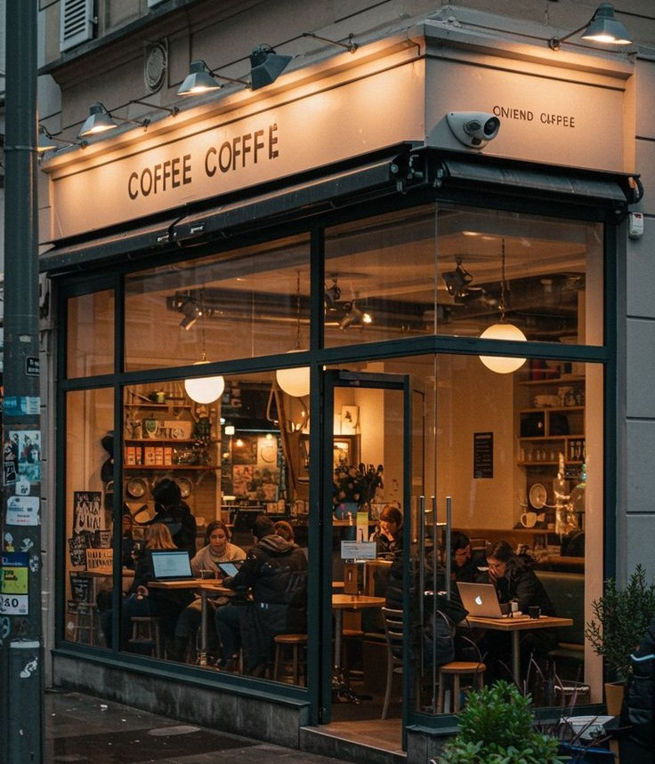
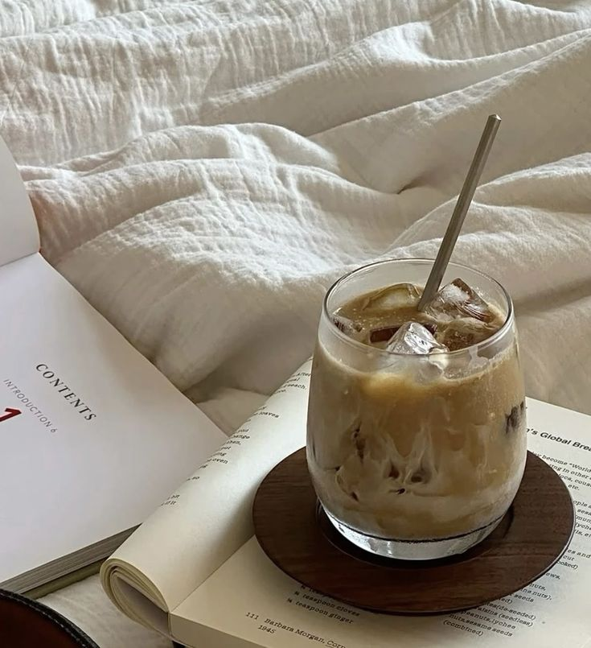

5- Visitar cafeterias bonitas
Me gusta visitar cafeterias, porque me gusta conocer lugares nuevos y ambientes diferentes.

Cafés favoritos ☆
- Moka
- El café moka tiene un sabor suave, dulce y cremoso. Combina la intensidad ligera del café con el dulzor del chocolate, lo que hace que no sea tan amargo como un café solo.

- Capuchino
- Tiene un sabor equilibrado entre el café y la leche. Es cremoso, suave y ligeramente espumoso en la parte superior. El espresso le da un toque intenso, pero la leche lo hace más ligero y agradable.

- Café irlandes
- Tiene un sabor más fuerte y profundo. Combina café caliente con whisky y un poco de azúcar, y se corona con crema suave por encima.